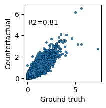
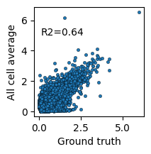

Counterfactual Prediction with DeepDive#
This tutorial demonstrates how to use DeepDive for counterfactual prediction in single-cell ATAC-seq data. Specifically, we show how to predict what chromatin accessibility profiles of a held-out cell type (Hepatoblasts) would look like if they had been observed in a particular donor sample.
[1]:
import scanpy as sc
import DeepDive
import seaborn as sns
import matplotlib.pyplot as plt
import numpy as np
[2]:
from utils import reads_to_fragments, rsquared
1. Load and preprocess the dataset#
We start with an AnnData object containing single-cell chromatin accessibility profiles. Here we use the liver sciATAC-seq3 dataset (sciatac3_liver_10k.h5ad), subset from the full dataset (dataset and preprocessing better described in the training.ipynb notebook).
[3]:
adata = sc.read_h5ad('data/sciatac3_liver_10k.h5ad')
# Filter genes detected in fewer than 1% of cells
min_cells = int(adata.shape[0] * 0.01)
sc.pp.filter_genes(adata, min_cells=min_cells)
# Ensure unique cell IDs
adata.obs_names_make_unique()
# Convert raw reads into fragments
reads_to_fragments(adata)
adata.X = adata.layers['fragments']
2. Create a held-out dataset for counterfactual prediction#
We hold out Hepatoblast cells from one donor (sample_7_liver) to use as ground truth for evaluating counterfactual predictions.
[4]:
adata_ho = adata[(adata.obs['cell_type'].astype(str) == 'Hepatoblasts') & (adata.obs['sample_name'].astype(str) == 'sample_7_liver')].copy()
adata = adata[~adata.obs_names.isin(adata_ho.obs_names)]
3. Define model and training parameters#
We specify model hyperparameters and training settings.
[5]:
n_decoders = 5
model_params = {
'n_epochs_pretrain_ae' : 200*n_decoders,
'n_decoders' : n_decoders,
}
train_params = {
'max_epoch' : 300*n_decoders,
'batch_size' : 1024,
'shuffle' : True
}
[6]:
discrete_covriate_keys = ['sample_name', 'sex', 'batch', 'cell_type']
continuous_covriate_keys = ['day_of_pregnancy']
5. Train DeepDive#
We initialize and train the model using the training dataset.
[7]:
model = DeepDive.DeepDive(adata = adata,
discrete_covariate_names = discrete_covriate_keys,
continuous_covariate_names = continuous_covriate_keys,
**model_params
)
[8]:
model.train_model(adata, None,
**train_params)
Epoch Train [1500 / 1500]: 100%|██████████| 10/10 [00:00<00:00, 11.20it/s, ETA=01d:00h:20:m53s|01d:00h:20:m53s, kl_loss=1.7, recon_loss=3.2e+3]
[9]:
model.save('model')
DeepDIVE model saved at: model
6. Reload the trained model#
We reload the model for downstream prediction.
[10]:
model = DeepDive.DeepDive(adata = adata,
discrete_covariate_names = discrete_covriate_keys,
continuous_covariate_names = continuous_covriate_keys,
**model_params
)
model = model.load(adata, 'model')
7. Compute ground truth average profile#
We normalize the held-out dataset (adata_ho) and compute its average accessibility profile.
[11]:
sc.pp.normalize_total(adata_ho, target_sum = 10_000)
[12]:
mean_ho = adata_ho.to_df().mean()
8. Predict counterfactuals#
We compare three profiles:
Ground truth (Hepatoblasts from
sample_7)Observed average (all other cell types from
sample_7)Counterfactual prediction (Hepatoblasts predicted by DeepDive in
sample_7)
[13]:
# Observed sample 7 (excluding Hepatoblasts)
sample_7 = adata[adata.obs['sample_name'].astype(str) == 'sample_7_liver'].copy()
rec = model.predict(sample_7, library_size=10_000)
mean_no = rec.to_df().mean()
# Counterfactual prediction: force cell_type = Hepatoblasts
sample_7.obs['ct_org'] = sample_7.obs['cell_type'].copy()
sample_7.obs['cell_type'] = 'Hepatoblasts'
rec = model.predict(sample_7, library_size=10_000)
mean_cf = rec.to_df().mean()
9. Evaluate counterfactual prediction#
We compare the counterfactual predictions against the ground truth and the observed average using scatter plots and R² scores.
[14]:
# Counterfactual vs Ground truth
plt.subplots(figsize=(2,2))
sns.scatterplot(x=mean_ho, y=mean_cf, s=10, edgecolor='k')
plt.text(x=0.1, y=5, s=f"R2={round(rsquared(mean_ho, mean_cf), 2)}")
plt.xlabel('Ground truth')
plt.ylabel('Counterfactual')
# Counterfactual vs All-cell average
plt.subplots(figsize=(2,2))
sns.scatterplot(x=mean_no, y=mean_cf, s=10, edgecolor='k')
plt.text(x=0.1, y=5, s=f"R2={round(rsquared(mean_no, mean_cf), 2)}")
plt.xlabel('Ground truth')
plt.ylabel('All cell average')
[14]:
Text(0, 0.5, 'All cell average')


Summary#
In this tutorial, we:
Preprocessed an ATAC-seq dataset
Held out Hepatoblast cells from one donor
Trained
DeepDiveto disentangle covariatesPredicted counterfactual accessibility profiles
Compared predictions to ground truth and donor-wide averages
This demonstrates how DeepDive can be used for counterfactual prediction to study the regulatory landscape of unobserved cell–donor combinations.
[ ]: